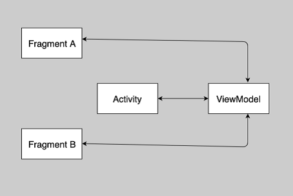
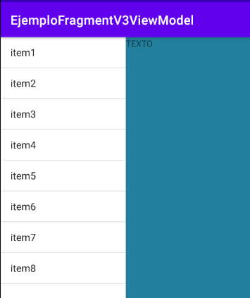
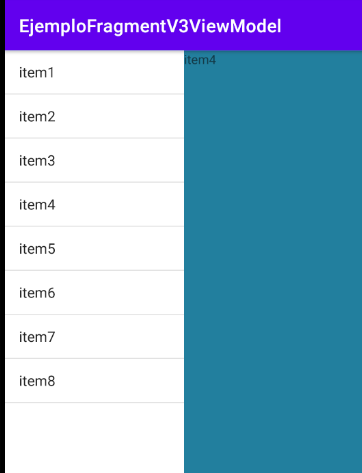

Apuntes
Tema 7. Fragments
Índex
- Introducció
- Cicle de vida d'un Fragment
- Subclasses de Fragment
- Crear un Fragment
- Agregar un Fragment a una Activity
- Comunicar Fragments i Activitys
- Pila d'activitats i FragmentManager [Ampliació]
- DialogFragment
- Vistes Lliscants (Vistas Deslizantes) y Tabs
Introducció
La necessitat d'usar fragments naix amb la versió 3.0 (API 11) d'Android, a causa de les múltiples grandàries de pantalla que estaven apareixent en el mercat i a la capacitat d'orientació de la interfície (Landscape i Portrait). Aquestes característiques necessitaven dotar a les aplicacions Android de la capacitat per a adaptar-se i respondre a la interfície d'usuari sense importar el dispositiu.
Un fragment és una secció modular d'interfície d'usuari embeguda dins d'una activitat amfitriona, el qual permet versatilitat i optimització de disseny. Es tracta de miniactivitats contingudes dins d'una activitat amfitriona, manejant el seu propi disseny (un recurs layout propi) i cicle de vida.
Aquestes noves entitats permeten reusar codi i estalviar temps de disseny a l'hora de desenvolupar una aplicació. Els fragments faciliten el desplegament de les teues aplicacions en qualsevol mena de grandària de pantalla i orientació.
Un altre avantatge d'usar-los és que permeten crear dissenys d'interfícies d'usuari de múltiples vistes. Què vol dir això?, que els fragments són imprescindibles per a generar activitats amb dissenys dinàmics, com per exemple l'ús de pestanyes de navegació, expand and collapse, stacking, etc.
Un fragment s'executa en el context d'una activitat, però té el seu propi cicle de vida i en general la seua pròpia interfície d'usuari, rep els seus propis esdeveniments d'entrada, i es poden agregar o llevar mentre que l'activitat existisca.
Un fragment ha d'estar sempre integrat en una activity, de manera que es veurà afectat pel propi cicle de vida de la activity. Per exemple: quan una activity es deté, ho fan tots els fragments d'aquesta; quan aquesta es destrueix, ho fan també tots els seus fragments. No obstant això, mentre una activity està en execució, es pot manipular cadascun dels fragments inclosos en ella de manera independent, tant afegint-los com eliminant-los.
Cicle de vida d'un Fragment
La imatge de l'esquerra representa el cicle de vida d'un fragment. I la imatge de la dreta els estats dels seus mètodes.
Generalment els mètodes més usats a l'hora d'implementar un fragment són els següents:
onCreate(). El sistema crida a aquest mètode a l'hora de crear el fragment. Normalment en ell, iniciarem els components essencials del fragment.onCreateView(). El sistema crida al mètode quan és l'hora de crear la interfície d'usuari o vista, és a dir, associar el layout al fragment, normalment es retorna la view del fragment.onPause(). El sistema cridara a aquest mètode en el moment que l'usuari abandone el fragment, per tant és un bon moment per a guardar informació.
Encara que en el cicle de vida ens trobem amb els següents mètodes callback, relacionats amb el cicle de vida d'una activitat. Esbrinem una mica sobre ells:
onAttach():. És invocat quan el fragment ha sigut associat a l'activitat amfitriona.onActiviyCreated(). S'executa quan l'activitat amfitriona ja ha acabat l'execució del seu mètode onCreate().onCreate(). Aquest mètode és anomenat quan el fragment s'està creant. En el pots inicialitzar tots els components.onCreateView(). Es diu quan el fragment serà dibuixat per primera vegada en la interfície d'usuari. En aquest mètode crearem el view que representa al fragment per a retornar-lo cap a l'activitat.onStart(). Es diu quan el fragment aquesta visible davant l'usuari. Òbviament depén del mètode onStart() de l'activitat.onResume(). És executat quan el fragment està actiu i interactuant amb l'usuari. Aquesta situació depén del fet que l'activitat amfitriona estiga primer en el seu estat Resume.onStop(). Es diu quan un fragment ja no és visible per a l'usuari pel fet que l'activitat amfitriona està detinguda o perquè dins de l'activitat s'està gestionant una operació de fragments.onPause(). Igual que les activitats, onPause s'executa quan es detecta que l'usuari va dirigir el focus per fora del fragment.onDestroyView(). Aquest mètode és anomenat quan la jerarquia de views a la qual ha sigut associat el fragment ha sigut destruïda.onDetach(). Es diu quan el fragment ja no està associat a l'activitat amfitriona.
Subclasses de Fragment
A part de crear un Fragment directament, Android ens ofereix la possibilitat d'utilitzar les següents subclasses de Fragment, d'aquestes subclasses parlarem posteriorment
- DialogFragment - Mostra un quadre de dialogue flotant.
- ListFragment - Mostra una llista d'elements.
- PreferenceFragment - Mostra una llista de preferències.
Crear un Fragment
Per a crear un fragment primer haurem d'estendre la classe Fragment i sobreescriure el mètode onCreateView() en el qual retornarem la vista d'aquest fragment. Veurem l'exemple i l'expliquem a continuació.
FragmentUNO.kt
class FragmentUno: Fragment() { override fun onCreateView( inflater: LayoutInflater, container: ViewGroup?, savedInstanceState: Bundle?): View? { return inflater.inflate(R.layout.fragment_uno,container,false) } }
📌 En sobreescriure el mètode
onCreateView()podem observar que de sèrie ens dona la possibilitat d'utilitzar un LayoutInflater, un ViewGroup i un Bundle. El LayoutInflater normalment ho utilitzarem per a unflar el layout del nostre fragment. El ViewGroup serà la vista pare on s'inserira el layout del nostre fragment. I finalment el Bundle podrem utilitzar-ho per a recuperar dades d'una instància anterior del nostre fragment.
D'aquesta manera ja tindrem creat un fragment que ens retornarà una vista i que podrem inserir en qualsevol activity del nostre projecte.
✋ Si es vol usar Binding amb Fragments, informate del seu ús en el següent enllaç, vincular vistes
✋ Comentar que prèviament s'ha creat el layout per a aquest fragment i es correspon amb
fragment_un.xml.<?xml version="1.0" encoding="utf-8"?> <LinearLayout xmlns:android="http://schemas.android.com/apk/res/android" android:layout_width="match_parent" android:layout_height="match_parent" android:background="#CC00CC00"> <TextView android:layout_width="wrap_content" android:layout_height="wrap_content" android:text="Información fragment1"/> </LinearLayout>
Agregar un Fragment a una Activity
A l'hora d'agregar un fragment a una activitat el podrem realitzar de dues maneres:
- Declarar el fragment en el layout de la activity. Aquest fragment tindrà la qualitat de no ser eliminat o substituït per res, en cas contrari tindrem errors. Se li dona el nom de fragment estàtic o final.
- Agregar directament el Fragment mitjançant programació Android. Aquest sí que es podrà eliminar o substituir per un altre fragment o un altre contingut. Se'ls dona el nom de fragment dinàmic.
Agregar Fragments Estàtics
El primer que hem de fer és crear el layout de nostra activity especificant un element fragment.
activity_main.xml
<LinearLayout xmlns:android="http://schemas.android.com/apk/res/android" android:layout_width="match_parent" android:layout_height="match_parent" android:orientation="horizontal"> <androidx.fragment.app.FragmentContainerView android:id="@+id/fragment_uno" android:name="com.ejemplos.b3.ejemplofragmentv1.FragmentUno" android:layout_weight="0.5" android:layout_width="wrap_content" android:layout_height="match_parent"/> <androidx.fragment.app.FragmentContainerView android:id="@+id/fragment_dos" android:name="com.ejemplos.b3.ejemplofragmentv1.FragmentDos" android:layout_weight="0.5" android:layout_width="wrap_content" android:layout_height="match_parent"/> </LinearLayout>
📌 Simplement creem l'element FragmentContainerView i especifiquem a través de l'atribut
android:namela ubicació del nostre fragment (nom de paquet on està situat el fragment). FragmentContainerView és un contenidor personalitzat per a Fragments que estén de FrameLayout, per la qual cosa maneja les transaccions de manera més fiable.
És recomanable crear un identificador únic per a cada fragment, que ens pot servir per a restaurar fragments o fins i tot per a realitzar transaccions o eliminació d'aquests.
Una vegada creat el layout de la activity simplement creem una activitat i li apliquem el mètodesetContentView()indicant el id del layout que acabem de crear. El resultat pot ser el següent, tenint en compte que s'ha d'afegir la classe FragmentDos similar a la FragmentUno:
✒️Crea una App FragmentEstatico, per a provar els fragments estàtics de l'exemple anterior
Agregar Fragment Dinàmic amb Jetpack Navigation
Els fragments dinàmics, és a dir els fragments que es poden afegir a l'activitat en qualsevol moment, es poden gestionar de dos maneres:
- Usant JetPack Navigation, que aporta senzillesa a esta tasca.
- Usant FragmentManager i la pila d'activitats. Afegit posteriorment en el tema com a concepte d'ampliació.
Majoritàriament usarem Jetpack Navigation, per la qual cosa necessitarem saber com es realitzen estos passos
Jetpack Navigation
El component Navigation d'Android Jetpack, permet implementar la navegació dels elements de l'aplicació de forma més coherent i senzilla, des de simples clics de botons fins a patrons més complexos, com les barres d'apps i els panells laterals de navegació. És important seguir el sistema establit de principis, perquè l'usuari puga entendre correctament el funcionament de l'app. Podem trobar tres elements fonamentals:
- Gráfico de navegación: És un recurs XML que conté tota la informació relacionada amb la navegació.
- NavHost: És un contenidor buit que mostra els destins del teu gràfic de navegació. Per defecte està implementat el
NavHostFragmentper a fragments i que serà el que usem. - NavController: És l'objecte que administra la navegació de l'app dins d'un NavHost
✋Será important decidir com volem passar d'uns fragments a altres, porque el que no s'ha de fer és mesclar el sistema de Navigation amb el que usem amb FragmentManager.
NavHost
En l'exemple ampliarem la versió anterior agregant un fragment dinàmic junt amb a l'estàtic. Ens crearem una classe per al fragment2, semblant a l'anterior i un layout per a gestionar l'aspecte. Després definirem en el layout un espai on poder afegir el fragment dinàmic, i que es correspondrà amb el NavHost, per a això usarem el contenidor FragmentContainerView amb id fragment_container i caldrà afegir els atributs següents:"
<LinearLayout xmlns:android="http://schemas.android.com/apk/res/android" xmlns:tools="http://schemas.android.com/tools" android:layout_width="match_parent" android:layout_height="match_parent" xmlns:app="http://schemas.android.com/apk/res-auto" android:orientation="horizontal" tools:context=".MainActivity"> <androidx.fragment.app.FragmentContainerView android:name="com.ejemplo.b7.myapplication.FragmentUno" android:id="@+id/fragment_uno" android:layout_weight="0.5" android:layout_width="wrap_content" android:layout_height="match_parent" tools:layout="@layout/fragment_uno" /> <androidx.fragment.app.FragmentContainerView android:id="@+id/fragment_container" android:name="androidx.navigation.fragment.NavHostFragment" app:defaultNavHost="true" app:navGraph="@navigation/nav_graf" android:layout_weight="0.5" android:layout_width="wrap_content" android:layout_height="match_parent" android:background="#3355CC00"> </androidx.fragment.app.FragmentContainerView> </LinearLayout>
📌 el espacio para insertar los fragmentes esta definido entre las Lìneas 15 a 24, los atributos nuevos que se tienen que poner para el funcionamiento correcto son: el nombre asignado a la clase Línea 17, se usa el
NavHostFragmentque ya está implementado; Línea 18, el atributodefaultNavHostgarantiza que tuNavHostFragmentintercepte el botón Atrás del sistema; En el navGraph se indica el nombre del gráfico de navegación. Elemento que vamos a explicar ahora Línea 19.
📌 l'espai per a insertar els fragmentes esta definit entre les Lìneas 15 a 24, els atributs nous que s'han de posar per al funcionament correcte són: el nom assignat a la classe Línea 17, s'usa el NavHostFragment que ja està implementat; Línea 18, l'atribut defaultNavHost garantix que el teu NavHostFragment intercepte el botó Arrere del sistema; En el navGraph s'indica el nom del gràfic de navegació. Element que explicarem ara Línea 19.
NavGraph
Per a crear el NavGraph hem de crear un nou recurs de tipus navigation res->new->android resource file.
Al fer açò es crearà una nova carpeta navigation amb el recurs dins d'ella. L'arxiu .xml es podrà treballar de forma gràfica o per mitjà de codi, encara que en este cas és més senzill utilitzar la part visual. Podrem afegir els elements pels quals volem que navegue l'app i crear les accions entre ells, tot és molt visual i senzill.
Podem veure que en la part del Host s'ha afegit l'element NavHost al crear el contenidor de fragments com hem explicat anteriorment (enllaçant, per nombre, amb el recurs en la línia app:navGraph=@navigation/navegacion_fragments) . Si no es crea correctament el Host no funcionaran les accions. Per a afegir elements polsarem el símbol de + i seleccionarem de la llista d'elements navegables que tinguem en l'app.
✒️Crea una App fragmentV1, per a provar l'exemple anterior, el fragment1 serà estàtic mentres que el fragment2 serà afegit de forma dinàmica des del codi
Gestionar Fragments amb Jetpack Navigation
Una vegada agregats els elements, podem afegir les accions entre ells, que ens permetran gestionar la càrrega dels distints fragments en els contenidors. Per a això crearem un altre exemple que tindrà un contenidor per als fragments (usarem els dos fragments de l'exemple anterior), i un botó que ens permetrà l'acció de canvi entre ells
<FrameLayout xmlns:android="http://schemas.android.com/apk/res/android" xmlns:tools="http://schemas.android.com/tools" android:layout_width="match_parent" android:layout_height="match_parent" xmlns:app="http://schemas.android.com/apk/res-auto"> <androidx.fragment.app.FragmentContainerView android:name="androidx.navigation.fragment.NavHostFragment" app:defaultNavHost="true" app:navGraph="@navigation/nav_graf" android:id="@+id/fragment_container" android:layout_width="match_parent" android:layout_height="match_parent"> </androidx.fragment.app.FragmentContainerView> <Button android:layout_margin="20dp" android:id="@+id/boton" android:text="CAMBIAR" android:layout_width="wrap_content" android:layout_height="wrap_content" android:layout_gravity="center|bottom"/> </FrameLayout>
Després de crear el xml, haurem d'afegir els dos fragments al gràfic de navegació, quedant de la manera següent:
El pas següent serà el d'afegir l'acció, per a afegir les accions haurem de seleccionar un element i arrossegar l'acció al següent. Una altra manera seria indicant, d'entre els elements afegits en el gràfic, el destí on ens portarà eixa acció, l'aneu de l'acció es crega automàticament i s'usarà posteriorment en el codi.
Hi ha un tipus de acciones globales que permeten arribar a un destí des de qualsevol lloc. Es mostren com una -> curta enllaçada només pel destí, i que es creen per mitjà del menú contextual del destí seleccionat.
En el nostre exemple haurem de crear dos accions que ens porten d'un fragment a l'altre, com en la imatge següent:
Si polsem diverses vegades el botó s'anirà canviant entre fragments, el problema que ens trobarem al polsar l'obción Back del dispositiu és que deurem de passar per totes les transaccions realitzades fins a arribar al final d'estes. Per a això haurem de fer el següent:
✋ Quan estem creant el gràfic de navegació podem optar per perfeccionar les accions perquè a l'ocórrer estes i botar a un lloc concret, es desapilen els elements intermedis innecessaris. Açò evitarà que al polsar el
backPressed, es passe per cada un dels fragments apilats en les distintes accions. Per a això només hem d'anar a la propietat Pop Behavior de l'acció desitjada, i indicar en popUpTo fins que element es vol desapilar, amb popUpToInclusive a true, indiquem que també es desapile eixe element.
Encara que podem realitzar tota l'operació usant el dissenyador de Navigation este té el codi xml associat, en el cas del nostre exemple el codi associat al nav_graf.xml seria el següent:
<?xml version="1.0" encoding="utf-8"?> <navigation xmlns:android="http://schemas.android.com/apk/res/android" xmlns:app="http://schemas.android.com/apk/res-auto" android:id="@+id/nav_graf" app:startDestination="@id/fragmentUno"> <fragment android:id="@+id/fragmentUno" android:name="com.ejemplo.b7.ejemplofragmentv2.FragmentUno" android:label="FragmentUno"> <action android:id="@+id/action_fragmentUno_to_fragmentDos2" app:destination="@id/fragmentDos" app:popUpToInclusive="true" /> </fragment> <fragment android:id="@+id/fragmentDos" android:name="com.ejemplo.b7.ejemplofragmentv2.FragmentDos" android:label="FragmentDos"> <action android:id="@+id/action_fragmentDos_to_fragmentUno" app:destination="@id/fragmentUno" app:popUpTo="@id/fragmentUno" app:popUpToInclusive="true" /> </fragment> </navigation>
NavController
Este element ja el usarem de forma programàtica i és el que ens permet executar les accions que hem creat amb el NavGraph. Cada NavHost té el seu propi NavController corresponent. Com s'explica en la documentació oficial, hi ha diverses formes de fer-ho. Per exemple desde una activity i resolent el codi del nostre exemple ho podríem fer de la manera següent:
override fun onCreate(savedInstanceState: Bundle?) { super.onCreate(savedInstanceState) setContentView(R.layout.activity_main) findViewById<Button>(R.id.boton).setOnClickListener { val navHostFragment= supportFragmentManager. findFragmentById(R.id.fragment_container) as NavHostFragment if (navHostFragment.navController.currentDestination?.id == R.id.fragmentUno) navHostFragment.navController.navigate(R.id.action_fragmentUno_to_fragmentDos2) else navHostFragment.navController.navigate(R.id.action_fragmentDos_to_fragmentUno) } }
📌 Primer usem una de les maneres existents per a referenciar al
NavControllerper a això creem un objecteNavHostFragmentidentificant-ho amb l'id del contenidor dels fragments. Abans de navegar a una acció, és interessant comprovar si estem en el fragment que té creada eixa acció, d'esta manera evitarem excepcions. Finalment, navegarem al fragment desitjat usant elidde l'acció registrada amb anterioritat. Lógicamente, este codi ho tindrem d'afegir al botó o un altre element que vullguem que execute la navegació.
Si la navegació la fem de un fragment a altre, el codi és molt paregut, encara que en este cas l'objecte creat és el NavController a partir de referenciar-ho amb el NavHostFragment per defecte, que càrrega el fragment.
val navController= NavHostFragment.findNavController(this) if (navController.currentDestination?.id == R.id.fragment1) navController.navigate(R.id.action_fragment1_to_fragment2)
✋ NavController també permet pasar dades entre fragment per mitjà de bundle, el procés és semblant a l'usat en altres explicacions.
✒️Prueba l'anterior exemple FragmentV2: botó que et vaja carregant l'un o l'altre fragment i alhora que s'acumulen en la pila. Provar que al polsar el botó de retrocés, es passa per cada un dels fragments que s'han carregat anteriorment. I realitza el que és necessari perquè no haja de passar per tots els fragments al polsar Back
Exemple de navegació entre tres fragments amb JetPack Navigation
🎓 Mostrarem el codi d'una activitat amb tres fragments de manera que: del primer es puga navegar al segon, del segon al tercer i del tercer al primer sempre que es polse el botón aceptar, mentres que si es polsa el botón cancelar es navegarà sempre al primer (la navegació al primer es realitzarà amb una acció global) . Per a això s'hauran de construir els .xml dels Fragments, tots seran iguals, canviant el color i el text. Codi fragment1.xml amb dos botons cancelar i aceptar:
<?xml version="1.0" encoding="utf-8"?> <LinearLayout xmlns:android="http://schemas.android.com/apk/>res/android" android:orientation="vertical" android:layout_width="match_parent" android:background="#2196F3" android:gravity="center" android:layout_height="match_parent"> <TextView android:layout_width="wrap_content" android:layout_height="wrap_content" android:textSize="20dp" android:text="Fragment1"/> <LinearLayout android:layout_width="match_parent" android:layout_height="wrap_content" android:orientation="horizontal"> <com.google.android.material.button.MaterialButton android:id="@+id/aceptar" android:layout_width="wrap_content" android:layout_height="wrap_content" android:layout_weight="0.5" android:backgroundTint="#2196F3" android:text="Aceptar" /> <com.google.android.material.button.MaterialButton android:layout_width="wrap_content" android:layout_height="wrap_content" android:layout_weight="0.5" android:backgroundTint="#2196F3" android:text="Cancelar" android:id="@+id/cancelar"/> </LinearLayout> </LinearLayout>
El .xml de l'activitat principal serà com el que hem posat al principi de l'explicació de
Navigation. Mentres que MainActivity.kt tendrá el seguent códig:
class MainActivity : AppCompatActivity() { lateinit var navHostFragment:NavHostFragment override fun onCreate(savedInstanceState: Bundle?) { super.onCreate(savedInstanceState) setContentView(R.layout.activity_main) navHostFragment = supportFragmentManager. findFragmentById(R.id.contenedor) as NavHostFragment } fun cancelar() { val navController = navHostFragment.navController navController.navigate(R.id.action_global_fragment1) } }📌 S'ha creat un mètode cancelar que permet executar l'acció global, s'ha fet d'esta manera per a no repetir codi en els fragments i de pas conéixer com s'executa una acció des de la main. Línea 6, creem la instància del
NavHostFragment. Línea 11 i 12 instanciem elNavControlleri executem l'acció global de navegació al Fragment1.El Fragment1.kt i per tant, la resta de Fragments. Amb el botó aceptar que realitzarà l'acció de moure's al següent fragment (en Fragment3 serà la global de moure's al fragment1) i el botó cancelar que llançarà l'acció global.
class Fragment1: Fragment() { override fun onCreateView( inflater: LayoutInflater, container: ViewGroup?, savedInstanceState: Bundle? ): View? { val view=inflater.inflate(R.layout.fragment1,container,false) view.findViewByIdMaterialButton(R.id.aceptar). setOnClickListener { aceptar() } view.findViewByIdMaterialButton(R.id.cancelar). setOnClickListener{(requireActivity() as MainActivity) .cancelar()} return view } fun aceptar() { val navController= NavHostFragment.findNavController(this) if (navController.currentDestination?.id == R.id.fragment1) navController.navigate(R.id.action_fragment1_to_fragment2) } }📌 Línea 9 acció del botó acceptar que invoca al mètode acceptar que executa l'acció de navegació. Línea 10 acció del botó cancel·lar que invocar al mètode cancel·lar de MainActivity, realitzant un cast del context.
✒️ A partir del codi exposat en l'exemple anterior, crea l'exercici complet. Recorda que has de fer funcionar les accions de navegació creant un recurs de tipus navigation.
Comunicar Fragments i Activitys
Quan parlem sobre la comunicació de fragments, hem de tindre en compte les següents premisses:
- Els fragments no poden ni deuen comunicar-se directament.
- La comunicació entre fragments ha de fer-se a través dels associats activity.
- Els fragments no necessiten conéixer qui és la seua activitat principal.
A partir de l'anterior, podem deduir que dos objectes Fragment mai han de comunicar-se directament. Hi ha diverses maneres de realitzar la comunicació entre aquests, però estudiarem les dues més recomanades. Aquestes dues formes són: mitjançant la implementació d'una interface o mitjançant un element ViewModel.

Comunicación mediante Interface
|

Comunicación mediante ViewModel
|
Comunicació mitjançant ViewModel
ViewModel. és una de les noves incorporacions a la implementació d'Android i la que google recomana per a la comunicació entre fragments.
Un ViewModel sempre es crea en associació amb un àmbit (un fragment o una activitat) i es conservarà mentre l'àmbit estiga actiu. Per exemple, si és una Activitat, fins que s'acabe. En altres paraules, això significa que un ViewModel no es destruirà si el seu propietari es destrueix per un canvi de configuració (per exemple, rotació). La nova instància del propietari es tornarà a connectar al ViewModel existent.
El següent pas serà crear una classe que derive de ViewModel semblant a la següent, i tenint en compte que tipus de dades volem passar entre els fragments, en aquest cas un String encara que podria ser un objecte o fins i tot col·leccions d'aquests:
class ItemViewModel : ViewModel() { private val liveData=MutableLiveData<String>() val getItem: LiveData<String> get() = liveData fun setItem(item: String) { liveData.value = item } }
📌Com podem veure en el codi anterior, apareix un element nou per a exposar les dades que l'hem anomenat liveData de tipus
MutableLiveDataque al seu torn estén deLiveData, aquest element és un titular de dades que és capaç de ser observat per a enviar només actualitzacions de dades quan el seu observador està actiu, pot contindre qualsevol tipus de dades, i a més d'això, és conscient del cicle de vida per a manar les actualitzacions de dades solament si l'observador està actiu.
Per a observar un element LiveData, tenim la classeObserver, que a través del seu objecte podrem saber si està en estat actiu (el seu cicle de vida està en l'estat STARTED o RESUMED) o inactiu (en qualsevol altre cas). LiveData només notifica als observadors actius sobre les actualitzacions.
🎓 Suposarem un exemple senzill en el qual, usant el ViewModel mostrat amb anterioritat, en una activity es carreguen dues fragments alhora i es realitza la comunicació entre els dos fragments. Un tindrà un EditText per a introduir un valor i un botó, en l'altre es mostrarà el contingut del EditText en prémer el botó. Per a això haurem de crear dues classe Fragments, una que serà el detall FragmentSecundario i que només tindrà un text i una classe FragmentPrimario que tindrà els elements necessaris. El resultat serà semblant al següent:

El layout del fragment primari podria ser, fragment_primario.xml:
<LinearLayout xmlns:android="http://schemas.android.com/apk/res/android" android:layout_width="match_parent" android:layout_height="match_parent" android:orientation="vertical" android:gravity="center"> <EditText android:layout_width="wrap_content" android:layout_height="wrap_content" android:hint="Introduce Texto a pasar" android:id="@+id/texto"/> <Button android:layout_width="wrap_content" android:layout_height="wrap_content" android:text="Mandar" android:id="@+id/boton"/> </LinearLayout>El layout del fragment detalle podria ser, fragment_secundario.xml:
<?xml version="1.0" encoding="utf-8"?> <LinearLayout xmlns:android="http://schemas.android.com/apk/res/android" android:layout_width="match_parent" android:layout_height="match_parent" android:background="#247f9e"> <TextView android:text="TEXTO" android:layout_width="match_parent" android:layout_height="match_parent" android:id="@+id/texto"/> </LinearLayout>
El layout de l'activitat principal, activity_main.xml:
<LinearLayout xmlns:android="http://schemas.android.com/apk/res/android" xmlns:tools="http://schemas.android.com/tools" android:layout_width="match_parent" android:layout_height="match_parent" xmlns:app="http://schemas.android.com/apk/res-auto" android:orientation="horizontal"> <androidx.fragment.app.FragmentContainerView android:name="com.ejemplo.b7.ejemplofragmentv3viewmodelfacil.FragmentPrimario" android:id="@+id/fragment_uno" android:layout_width="200dp" android:layout_height="match_parent"/> <androidx.fragment.app.FragmentContainerView android:name="com.ejemplo.b7.ejemplofragmentv3viewmodelfacil.FragmentSecundario" android:id="@+id/fragment_dos" android:layout_width="200dp" android:layout_height="match_parent"> </androidx.fragment.app.FragmentContainerView> </LinearLayout>L'activitat principal amb la càrrega dels dos fragments podria quedar així, MainActivity.kt:
class MainActivity : AppCompatActivity() { override fun onCreate(savedInstanceState: Bundle?) { super.onCreate(savedInstanceState) setContentView(R.layout.activity_main) } }
El Fragment primari podria ser com el que segueix, FragmentPrimario.kt:
class FragmentPrimario : Fragment() { private val model:ItemViewModel by activityViewModels() override fun onCreateView( inflater: LayoutInflater, container: ViewGroup?, saveInstanceState: Bundle? ): View? { val view: View = inflater.inflate (R.layout.fragment_primario, container, false) view.findViewById<Button>(R.id.boton).setOnClickListener{ model.setItem(requireActivity(). findViewById<EditText>(R.id.texto).text.toString()) } return view } }📌 Línia 2 es crea una propietat del
ViewModelcreat amb anterioritat, utilitzant el delegatactivityViewModelsper a obtindre una referència al ViewModel en l'àmbit de la seua activitat i que es puga compartir entre les diferents vistes o fragments, mentre el cicle de vida ho permeta. Per a poder incloure aquest delegat, s'ha d'afegir la següent dependència (hui dia):implementation "androidx.activity:activity-ktx:1.4.0" implementation "androidx.fragment:fragment-ktx:1.4.1"Línia 12, quan es prema el botó es modificarà el valor del LiveData amb la informació del editext
El Fragment amb el detall, FragmentSecundario.kt:
class FragmentSecundario:Fragment() { private val model:ItemViewModel by activityViewModels() override fun onCreateView( inflater: LayoutInflater, container: ViewGroup?, saveInstanceState: Bundle?): View? { val view: View = inflater.inflate (R.layout.fragment_secundario, container, false) val nameObserver = Observer<String>{cadena -> view.findViewById<TextView>(R.id.texto).text=cadena} model.getItem.observe(requireActivity(), nameObserver) return view } }📌 Instanciem el ViewModel Línia 2, Creem el manejador amb la funcionalitat d'assignar al TextView el text que està sent observat Línia 9. Línia 11 s'assigna al delegat observe el manejador creat amb anterioritat.
🎓Codificarem una altra vegada aquest cas, però amb un xicotet canvi que ens valdrà per a presentar un element nou ListFragment, per a això el FragmentPrimario passarem a cridar-ho MyListFragment que heretarà
ListFragmenti que a causa d'això no necessita tindre associat un xml. El resultat serà semblant al següent:En l'única classe que haurem de fer canvis és en la nova classe que ara es veurà així MyListFragment.kt:
class MyListFragment: ListFragment() { private val model:ItemViewModel by activityViewModels() private val valores = arrayOf<String?>("item1", "item2", "item3", "item4", "item5", "item6", "item7", "item8") override fun onCreate(savedInstanceState: Bundle?) { super.onCreate(savedInstanceState) listAdapter = ArrayAdapter<Any?>(requireActivity(), android.R.layout.simple_list_item_1, valores) } override fun onListItemClick(l: ListView, v: View, position: Int, id: Long) { super.onListItemClick(l, v, position, id) valores[position]?.let { model.setItem(it) } } }📌Línia 1 en aquest cas veiem que el fragment hereta de
ListFragmenten comptes deFragment, això permet que el fragment estiga format per una llista d'elements i que no s'haja de crear cap vista específica per a ell. Per a associar els elements a la llista, haurem de crear unArrayAdapterindicant els valors i el layout d'eixida (predefinit en els recursos d'Android) Línia 8 (Aquest element es veurà més extensament en temes posteriors). Línia d'11 a 15, aquesta sobrecàrrega del mètodeonListItemClickestà associada a la pulsació de qualsevol element de la llista, entrant com a paràmetres la vista i la posició de l'element premut. Línia 2 es crea una propietat delViewModelcreat amb anterioritat, utilitzant el delegatactivityViewModelsper a obtindre una referència al ViewModel en l'àmbit de la seua activitat i que es puga compartir entre les diferents vistes o fragments, mentre el cicle de vida ho permeta
🎓 Un altre cas diferent, podem tindre'l quan el fragment es comunica a través de la activity, mitjançant el ViewModel. Suposarem, el cas més comú en el qual unisca activity carregarà una llista i en prémer un element d'aquesta es carrega l'altre fragment. El layout del fragment_secundari.xml i MyListFragment.kt tindran el mateix codi que per a l'anterior exemple.
El layout de l'activitat principal ara només tindrà un contenidor, activity_main.xml:
<?xml version="1.0" encoding="utf-8"?> <androidx.fragment.app.FragmentContainerView xmlns:android="http://schemas.android.com/apk/res/android" xmlns:app="http://schemas.android.com/apk/res-auto" android:id="@+id/contenedor_fragment" xmlns:tools="http://schemas.android.com/tools" android:name="androidx.navigation.fragment.NavHostFragment" app:defaultNavHost="true" app:navGraph="@navigation/nav_graf" android:layout_width="match_parent" android:layout_height="match_parent" tools:context=".MainActivity"> </androidx.fragment.app.FragmentContainerView>L'activitat principal amb la càrrega del fragment amb la llista i amb l'observador sobre el ViewModel, quedarà així MainActivity.kt:
class MainActivity : AppCompatActivity() { private val model: ItemViewModel by viewModels() override fun onCreate(savedInstanceState: Bundle?) { super.onCreate(savedInstanceState) setContentView(R.layout.activity_main) val nameObserver = Observer<String>{cadena -> val bundle=Bundle() bundle.putString("DATO",cadena) var navHostFragment = supportFragmentManager. findFragmentById(R.id.contenedor_fragment) as NavHostFragment val navController = navHostFragment.navController if (navController.currentDestination?.id == R.id.myListFragment) navController. navigate(R.id.action_myListFragment_to_fragmentSecundario, bundle) } model.getItem.observe(this, nameObserver) } }📌Línia 2, instanciem el ViewModel tenint en compte que per a l'activitat s'associa el delegat
viewModels. En el bloc des de la Línia 6 fins a la 15, construïm un delegat amb l'observador que s'encarregarà de carregar el FragmentSecundario amb la informació passada en un Bundle. Línia 14, es posa en observació el ViewModel amb el delegat construït anteriorment.En el FragmentSecundario.kt s'haurà de recuperar el bundle per a poder modificar el TextView amb la dada de l'element premut.
class FragmentSecundario:Fragment() { override fun onCreateView( inflater: LayoutInflater, container: ViewGroup?, saveInstanceState: Bundle? ): View? { val bundle=arguments val view: View = inflater.inflate(R.layout.fragment_secundario, container, false) view.findViewById<TextView>(R.id.texto).text= bundle?.getString("DATO") return view } }
✒️Amb la informació que es passa en els tres casos d'estudi, reconstrueix i prova aquests casos afegint el codi que falte.
Comunicació mitjançant Interfícies
La implementació d'una interfície, és l'altra manera correcta per a passar informació i controlar algun esdeveniment. Es tracta de crear una interfície en el fragment i exigir a la activity que la implemente. D'aquesta manera quan el fragment reba un esdeveniment també el farà la activity, que s'encarregara de rebre les dades d'aqueix esdeveniment i compartir-los amb altres fragments.
🎓 Per a això tornarem a implementar l'últim exemple. És a dir l'aplicació que comença amb el fragment de la llista, i que carrega un altre que mostra el text de l'element premut. En aquest cas solament haurem de modificar el codi de la classe principal i del fragmente de la llista, és resta quedarà igual.
Primer crearem la interfície amb el mètode que necessitem, PasoCadenaInterface.ktinterface PasoCadenaInterface { fun informacionCadena(dato:String) }L'activitat principal MainActivity.kt:
class MainActivity : AppCompatActivity(), PasoCadenaInterface { override fun onCreate(savedInstanceState: Bundle?) { super.onCreate(savedInstanceState) setContentView(R.layout.activity_main) } override fun informacionCadena(dato: String) { val bundle=Bundle() bundle.putString("DATO",dato) var navHostFragment = supportFragmentManager.findFragmentById(R.id.contenedor_fragment) as NavHostFragment val navController = navHostFragment.navController if (navController.currentDestination?.id == R.id.myListFragment) navController.navigate(R.id.action_myListFragment_to_fragmentSecundario, bundle) } }📌Línia 0 obliguem al fet que l'activitat implemente la interfície. Línia 5 a 14, mètode de la interfície al qual li arriba la dada que manarem al fragment secundari.
Fragment amb la llista, MyListFragment.kt:
class MyListFragment: ListFragment() { lateinit var pasoCadenaInterface:PasoCadenaInterface private val valores = arrayOf<String?>("item1", "item2", "item3", "item4", "item5", "item6", "item7", "item8") override fun onCreate(savedInstanceState: Bundle?) { super.onCreate(savedInstanceState) listAdapter = ArrayAdapter<Any?>(requireActivity(), android.R.layout.simple_list_item_1, valores) } override fun onListItemClick(l: ListView, v: View, position: Int, id: Long) { super.onListItemClick(l, v, position, id) valores[position]? .let { pasoCadenaInterface.informacionCadena(it) } } override fun onAttach(context: Context) { super.onAttach(context) pasoCadenaInterface=context as PasoCadenaInterface } }📌 Línia 2 es crea una instància de la interface. Línia des de 17 a 20 s'anula el mètode
onAttachque és invocat en el moment que el fragment s'enllaça en l'activitat, en aquest mètode assignem el context d'entrada a la instància de la interface creada. Línia 14 amb l'objecte de la interface cridem al seu mètode passant el valor de l'element premut.
✒️Reconstrueix l'exemple anterior i prova el seu funcionament
Pila d'activitats i FragmentManager [Ampliació]
Tasks i BackStacks
Una tasca és una col·lecció de metadades i informació entorn a un pila d'activitats. Quan iniciem una app el sistema busca si aqueixa tasca ja ha sigut iniciada prèviament i en aqueix cas la reprén i tornar exactament al punt on estava. Si no existeix la tasca la inicia, llançant l'activitat principal com a base en la pila de tasques.
Cada vegada que s'inicia una activitat o es realitza una transacció de fragment afegint la transició a la pila addToBackStack(), s'afig aqueixa activitat/fragment a la tasca el que fa que l'activitat que queda per davall es pause o es detinga si la nova activitat oculta per complet l'anterior.
El botó de retorn està directament associat a la pila d'activitats. Quan es pressiona aquest botó, s'elimina un fragment o activitat de la pila es restaura l'immediatament inferior en aquesta. La repetició del BackPressed eliminarà totes les activitats fins que no quede cap i es destruïsca l'aplicació (tasca).
Gestionar Tasques Programàticament
Existeixen casos específics on requerirem manipular la forma en què una activitat és apilada o retirada en la back stack d'una tasca. El framework ens proveeix atributs del Manifest per a aquesta fi, amb launchMode podrem especificar la manera de llançament d'una activitat, els seus possibles valors són els següents: standard, singleTop, singleTask i singleInstance, per a més informació.
FragmentManager
FragmentManager és la classe responsable de realitzar accions en els fragments de la teua app, com agregar-los, llevar-los o reemplaçar-los, així com treballar amb la pila d'activitats. Encara que en el punt següent s'explicarà la biblioteca Jetpack Navigation que facilita el treballa, és important conéixer alguna cosa sobre aquesta classe.
Per a accedir a FragmentManager amb Kotlin, ho farem a traves de supportFragmentManager. FragmentManager agrupa els canvis realitzats en el que es diuen transaccions tractades amb la classe FragmentTransaction. Per la qual cosa és comú que s'agrupen diverses accions en una sola transacció (agregar o reemplaçar diversos fragments en una sola transacció). Per exemple: aquesta agrupació pot ser útil quan té diversos fragments de germans mostrats en la mateixa pantalla, com amb vista dividides.
Per a obtindre una instància de FragmentTransaction utilitzem beginTransaction
val fragmentTransaction = supportFragmentManager.beginTransaction()
Una instància de FragmentTransaccion permet realitzar diverses operacions com agregar, reemplaçar, eliminar o ocultar fragments. Alguns dels seus mètodes principals són:
add()rep l'id del contenidor del fragment (ha de ser de tipusFragmentContainerView) i el fragment que desitja agregar. El fragment agregat es trasllada a l'estat de RESUMED a espera del pròxim commit.remove()permet eliminar un fragment que s'ha de recuperar de l'administrador de fragments a través defindFragmentById() o findFragmentByTag(). Si la vista del fragment es va agregar prèviament a un contenidor, s'eliminarà després de l'anomenada a aquest mètode. El fragment eliminat es trasllada a l'estat de DESTROYED.replace()reemplaça un fragment existent en un contenidor amb una instància d'un nou que es proporcione com a argument. És equivalent a cridar remove i add en un mateix contenidor.show() i hide()són mètodes que permeten mostrar i ocultar la vista dels fragments que s'han agregat a un contenidor. Aquests mètodes estableixen la visibilitat de les vistes del fragment sense afectar el cicle de vida del fragment.addToBackStack()De manera predeterminada, els canvis realitzats en a FragmentTransaction no s'agreguen a la pila d'activitats, cal usar aquest mètode per a fer-lo (es pot afegir un tag identificatiu)commitprograma una confirmació de les transaccions pendents de manera asíncrona, que es realitzarà la pròxima vegada que aqueix fil estiga llest.
FragmentManager també té diversos mètodes d'utilitat, entre els quals es troben:
-
popBackStackdesapila fragments de la pila de retorn,simulant l'ús del comando Arrere per part de l'usuari. També es pot seleccionar un fragment en concret per a desapilar. -
Per a obtindre fragments que ja existeixen en l'activitat amb
findFragmentById()(per a fragments que proporcionen una IU en el disseny de l'activitat) ofindFragmentByTag()(per a fragments amb o sense IU).fT.add(R.id.contenedor,Fragment2(),"f2") val f=fM.findFragmentByTag("f2")
Gestionar Fragments amb FragmentManager
En el punt anterior hem parlat de transaccions, una transacció simplement és una acció que ens permet agregar, reemplaçar, eliminar o fins i tot realitzar altres accions quan treballem amb fragments. Aquestes transaccions poden ser apilades per la activity d'acolliment, permetent així a l'usuari navegar entre fragments mentre la activity seguisca en execució.
Cada transacció és un conjunt de canvis que es realitzen al mateix temps. Podrem fer aquests canvis a través dels mètodes add(), replace(), remove() acabant la transacció amb el mètode commit().
Per a afegir la transacció a la pila de retorn de la *activity utilitzarem el mètode addToBackStack() per a cada transacció que realitzem. Aquesta pila serà administrada per la activity i permetrà a l'usuari tornar a un fragment anterior prement la tecla tornar del telèfon intel·ligent o tauleta.
D'altra banda a través del mètode setTransaction() podem establir el tipus d'animació per a cada transacció.
Refarem l'exemple d'intercanviar entre fragments després de polsar un botó vist en el punt de Jetpack Navigation, però sense usar esta tecnologia. Li cridarem EjemploFragmentV2FragmentManager, el layout continuarà tenint un contenidor de fragments FragmenContainerView sense els atributs propis de Jetpack Navigation i un botó. El layout que mostrarà l'activity serà el següent:
<RelativeLayout xmlns:android="http://schemas.android.com/apk/res/android" xmlns:tools="http://schemas.android.com/tools" android:layout_width="match_parent" android:layout_height="match_parent"> <androidx.fragment.app.FragmentContainerView android:id="@+id/fragment_container" android:layout_width="match_parent" android:layout_height="match_parent" android:layout_above="@+id/boton"> </androidx.fragment.app.FragmentContainerView> <Button android:id="@+id/boton" android:text="CAMBIAR" android:layout_width="fill_parent" android:layout_height="wrap_content" android:layout_alignParentBottom="true"/> </RelativeLayout>
Una vegada creat el layout haurem de crear la següent activity:
Mainactivity.kt
class MainActivity : AppCompatActivity() { override fun onCreate(savedInstanceState: Bundle?) { super.onCreate(savedInstanceState) setContentView(R.layout.activity_main) val f1 = FragmentUno(); val f2 = FragmentDos(); var bol=true val boton = findViewById<Button>((R.id.boton)); boton.setOnClickListener{ val FT = getSupportFragmentManager().beginTransaction(); if (bol) { FT.replace(R.id.fragment_container, f1); } else { FT.replace(R.id.fragment_container, f2); } FT.addToBackStack(null); FT.commit(); bol = if(bol)false else true; } } }
📌Comentar que prèviament s'han creat dos fragments "FragmentUNO" i "FragmentDOS", cadascun amb el seu layout.
En la activity primer creem un valor booleà que ens servirà per a canviar entre un fragment o un altre cada vegada que l'usuari prema el botó Línia 18.
A més instanciaremosFragmentManagera través del seu mètodegetSupportFragmentManaget (), Línea 10. D'esta manera estem creant un objecte que ens servirà per a manejar els fragments. A continuació creem una instància deFragmentTransactionper a realitzar la transacció de fragments. A través del mètodebeginTransaction ()Línea 10, indiquem que realitzarem una transacció de fragments. El següent és crear les instàncies dels nostres fragmentslíneas 6 i 7i afegir-la a la transacció a través del mètodereplace (), que ens demana com a paràmetres la id del ViewGroup o vista pare on es col·locara dit fragment i com a segon paràmetre ens demana la instància del fragment on es mostrara la vista Línea 12 i 14. Tot açò ho farem en el listener aplicat al nostre botó.
Cada vegada que l'usuari prema el botó es creara una transacció afegint a la pila un fragment o un altre a través del mètodeaddToBackStack()que demana com a paràmetre un tag o identificador per a la transacció que es realitzarà Línia 16.
Es finalitza la transacció amb el mètodecommit()i canviem el valor booleà.
✒️Prova l'anterior exemple FragmentV2FragmentManager: botó que carregue l'un o l'altre fragment i al mateix temps que s'acumulen en la pila. Provar que en prémer el botó de retorn, es passa per cadascun dels fragments que s'han carregat anteriorment.
DialogFragment
Com hem vist al principi del tema, la classe Fragment té diverses classes filles que ens permeten fer tasques concretes, una d'elles és la classe DialogFragment. En heretar d'ella podrem crear diferents tipus de diàlegs i és la manera aconsellada per a fer-ho. Com hem dit, per a utilitzar aquest tipus de diàlegs haurem de crear-nos una classe derivada de DialogFragment i implementar en ella el tipus de dialogue que vulguem (com aquesta part ja la coneixem de temes anteriors, només comentarem un parell de AlertDialog diferents). Com en aquest cas els diàlegs estan implementats amb fragments per a mostrar-los necessitarem usar un FragmentManager, no la típica anomenada al mètode show. Passarem a veure un exemple:
Diàleg d'Alerta
Aquest tipus de diàleg es limita a mostrar un missatge senzill a l'usuari, i un únic botó de OK per a confirmar la seua lectura. Vegem un exemple:

class DialogoAlerta:DialogFragment(){ override fun onCreateDialog(savedInstanceState: Bundle?): Dialog { super.onCreateDialog(savedInstanceState) val builder=MaterialAlertDialogBuilder(requireActivity()) builder.setMessage("Esto es un mensaje de alerta") .setTitle("INFORMACIÓN DE ALERTA") .setPositiveButton("Avisado", DialogInterface.OnClickListener{dialogo,id->dialogo.cancel()}) return builder.create() } }
📌Com es pot veure en el codi, la manera de crear el dialogue és igual que la vista en el bloc 6, però en introduir-lo en un fragment ho fem més reutilitzable.
val dialogoAlerta=DialogoAlerta() dialogoAlerta.show(supportFragmentManager,"DialogoAlerta")
📌Per a llançar aquest diàleg, per exemple, des de la nostra activitat principal, creem un objecte de tipus DialogoAlerta i ho vam mostrar mediant el mètode show(), passant una referència al Fragment Manager mitjançant una anomenada a la propietat
supportFragmentManager, i una etiqueta identificativa del diàleg. Aquest segon argument, ha de ser un nom d'etiqueta únic i que el sistema usarà per a guardar i restaurar l'estat del fragment quan siga necessari. L'etiqueta també permet obtindre un controlador per al fragment cridant afindFragmentByTag().
Si per algun motiu es necessita passar informació al dialogue, podrem crear un constructor al qual li arribe la informació mitjançant Bundle o d'una altra manera.En el següent codi es pot veure un possible cas:
class DialogoAlerta(bundle: Bundle):DialogFragment(){ lateinit var bundle: Bundle init{ this.bundle=bundle } override fun onCreateDialog(savedInstanceState: Bundle?): Dialog { super.onCreateDialog(savedInstanceState) val builder=MaterialAlertDialogBuilder(requireActivity()) builder.setMessage(bundle.getString("DATO")) .setTitle("INFORMACIÓN") .setPositiveButton("Acceptar", DialogInterface.OnClickListener{dialogo,id->dialogo.cancel()}) return builder.create() } }
I en la creació del dialog fragment:
val bundle=Bundle() bundle.putString("DATO","AVISO DE PROXIMA CONSULTA MÉDICA") val dialogoAlerta=DialogoAlerta(bundle) dialogoAlerta.show(supportFragmentManager,"DialogoAlerta")
Diàleg de Selecció Múltiple
Aquest tipus de dialogue ens permet implementar una selecció múltiple, com podem veure en la següent imatge:
class DialogoSeleccionMultiple:DialogFragment() { override fun onCreateDialog(savedInstanceState: Bundle?): Dialog { super.onCreateDialog(savedInstanceState) val builder= MaterialAlertDialogBuilder(requireActivity()) val datos= arrayOf("Chino","Españo","Frances","Inglés","Turco") builder.setTitle("Seleccione idioma") .setMultiChoiceItems(datos,null, DialogInterface.OnMultiChoiceClickListener{dialogo,item,isChecked-> Toast.makeText(requireActivity(),"Se ha seleccionado " +datos[item],Toast.LENGTH_SHORT).show() }) return builder.create() } }
Cada vegada que se selecciona un element de la llista s'executarà el listener OnMultiChoiceClickListener, arribant a aquest el item premut i si està checked o unchecked.
✒️Ejercicio PropuestoDialogoPersonalizado
Vistes Lliscants (Vistas Deslizantes) y Tabs
ViewPager
Les vistes lliscants o paginació horitzontal, permeten navegar entre pantalles relacionades. Per exemple, entre pestanyes, amb un gest horitzontal del dit o un lliscament. Per a crear, hui dia, vistes lliscants s'utilitza l'element ViewPager2.
Reprendrem l'exemple de FragmentV3ViewModel i afegir el codi necessari per a aconseguir l'efecte de desplaçament entre fragments. Els passos són els següents:
-
El layout de l'activitat on s'afegiran els fragments, haurà d'incloure un
ViewPager2. Si la pantalla mostra els fragments complets, aquest element pot ser l'arrel. Per exemple, el .xml del MainActivity podria ser:<?xml version="1.0" encoding="utf-8"?> <androidx.viewpager2.widget.ViewPager2 xmlns:android="http://schemas.android.com /apk/res/android" android:id="@+id/ViewPager" android:layout_width="match_parent" android:layout_height="match_parent" />
-
S'haurà de crear una classe que manejarà la càrrega dels fragments amb el desplaçament. Aquesta classe haurà d'heretar de la classe abstracta
FragmentStateAdapter, per la qual cosa obligarà a implementar el mètodecreateFragment()a fi d'aprovisionar instàncies de Fragments a la paginació, i el mètodegetItemCount(), que ha de retornar el número exacte de fragments que es paginaràn.class FragmentPageAdapter(fragment: FragmentActivity): FragmentStateAdapter(fragment) { override fun getItemCount()=3 override fun createFragment(position: Int): Fragment { return when (position) { 0 -> MyListFragment() 1 -> FragmentSecundario() 2 -> FragmentTercero() else -> MyListFragment() } } }
✋ Lògicament les classes amb els fragments i els seus layouts relacionats han d'existir, en aquest cas s'ha duplicat FragmentSecundario de l'exemple anterior i s'ha canviat de nom a FragmenTercero.
-
Finalment s'haurà de connectar el
FragmentStateAdapterals objectesViewPager2.class MainActivity : FragmentActivity() { lateinit var viewPager:ViewPager2 override fun onCreate(savedInstanceState: Bundle?) { super.onCreate(savedInstanceState) setContentView(R.layout.activity_main) viewPager = findViewById(R.id.ViewPager) val pagerAdapter = FragmentPageAdapter(this) viewPager.adapter = pagerAdapter } override fun onBackPressed() { if (viewPager.currentItem == 0) super.onBackPressed() else viewPager.currentItem = viewPager.currentItem - 1 } }
📌 En aquest cas ens ha convingut que MainActivity herete de
FragmentActivity, perquè d'aquesta manera no ens de problemes l'anomenada al constructor deFragmentStateAdapter.
Línia 7 instanciem l'objecteViewPager2de activity_main.xml.
Línia 8 instanciem un objecte de la classe que hereta deFragmentStateAdapter.
Línia 9 relacionem tots dos objectes per a fer la connexió. Bloc 11 a 13, anul·lem el BackPressed perquè realitze el comportament correcte de canvi de fragments. Com es pot veure es fa mitjançant la propietatcurrentItemdecrementant-la en 1.
✒️ Reconstrueix l'exemple explicat amb anterioritat per a provar el funcionament del ViewPager. Podràs comprovar que el pas d'informació amb ViewModel continua funcionant correctament
TabsLayout
Un objecte TabLayout proporciona una forma crear pestanyes horitzontals. Quan s'usa juntament amb un ViewPager2 ens permet el lliscament al mateix temps que es marca la pestanya activa.
Les pestanyes es poden inserir en la ToolBar (la manera més comú) o independents a aquesta. Nosaltres seguirem un exemple que afig les Tabs a la Toolbar i per a això reprendrem l'anterior exercici, però ara a la activity_main.xml li afegirem una MaterialToolBar com ja vam veure en el Bloc 4 i dins d'aquesta ficarem el TabLayout.
<?xml version="1.0" encoding="utf-8"?> <LinearLayout xmlns:android="http://schemas.android.com/apk/res/android" android:layout_width="match_parent" android:layout_height="match_parent" android:orientation="vertical"> <com.google.android.material.appbar.AppBarLayout android:layout_width="match_parent" android:layout_height="wrap_content" android:theme="@style/ThemeOverlay.MaterialComponents.Dark.ActionBar"> <com.google.android.material.appbar.MaterialToolbar android:id="@+id/toolbar" android:layout_width="match_parent" android:layout_height="?attr/actionBarSize"/> <com.google.android.material.tabs.TabLayout android:id="@+id/tabs" android:layout_width="match_parent" android:layout_height="wrap_content" style="@style/Widget.MaterialComponents.TabLayout.PrimarySurface"/> </com.google.android.material.appbar.AppBarLayout> <androidx.viewpager2.widget.ViewPager2 android:id="@+id/viewpager" android:layout_width="match_parent" android:layout_height="match_parent"/> </LinearLayout>
Les noves línies a afegir en l'activitat principal per a referenciar al TabLayout creat i per a crear un objecte de tipus TabLayoutMediator encarregat de relacionar el tabLayout amb el ViewPager.
val tabLayout = findViewById<TabLayout>(R.id.tabs) TabLayoutMediator(tabLayout, viewPager) { tab, position -> when (position) { 0 -> tab.setIcon(R.drawable.ic_emoticon) 1 -> tab.text="Tap 2" 2 -> tab.setIcon(R.drawable.ic_place) } }.attach()
📌 En crear una instància de la classe TabLayoutMediator s'ha d'implementar la interface
TabLayoutMediator.TabConfigurationStrategyper a configurar la pestanya de la pàgina en la posició especificada (en aquesta interface s'establirà el text de la pestanya i qualsevol estil de les pestanyes que es necessite).
TabLayoutMediatorsincronitzarà la posició de ViewPager2 amb la pestanya seleccionada quan se seleccione una pestanya, i la posició de desplaçament de TabLayout quan l'usuari arrossegament ViewPager2.
A més TabLayoutMediator escolta diferents elements, per a controlar les diferents situacions:
OnPageChangeCallbackde ViewPager2 per a ajustar la pestanya quan ViewPager2 es moga.OnTabSelectedListenerde TabLayout per a ajustar VP2 quan es mou la pestanya.AdapterDataObserverde RecyclerView per a recrear el contingut de la pestanya quan canvia el conjunt de dades.
Un exemple del listener del ViewPager2 seria:
tabLayout.addOnTabSelectedListener (object:TabLayout.OnTabSelectedListener{ override fun onTabSelected(tab: TabLayout.Tab?) { TODO("Not yet implemented") } override fun onTabUnselected(tab: TabLayout.Tab?) { TODO("Not yet implemented") } override fun onTabReselected(tab: TabLayout.Tab?) { TODO("Not yet implemented") }})
✒️Construeix l'exemple i prova el seu funcionament